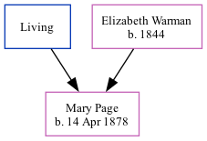

Mary Julia Page 1878 -
[ Home ] | [ Calendar ] | [ Surnames Index ] | [ Family History ]The daughter of James Page (a mariner) and Elizabeth Warman, Mary Page, the second cousin twice-removed on the father's side of <a href="I1.html">Nigel Horne</a>, was born in Folkestone, Kent, England on Apr 14, 1878<span class="citation">1,2,3</span> and baptized there at Christ Church on May 5, 1878. On Apr 3, 1881, she lived at St Johns Street in Folkestone<span class="citation">1</span>.
Parents
- James
- Elizabeth Ann was born in 1844
Citations
- 1881 England, Wales & Scotland Census - Findmypast (was age 2 and the daughter of the head of the household)
- England & Wales births 1837-2006 - Findmypast
- Kent Baptisms - Findmypast
Media
England & Wales births 1837-2006 - BMD/B/1878/2/AZ/000439/312
Kent Baptisms - GBPRS/CANT/B/96012983
England Births & Baptisms 1538-1975 - R_884910163
England Births & Baptisms 1538-1975 - R_884904370
Family Tree
Generated by Ged2Site. Last updated on Jul 20, 2025